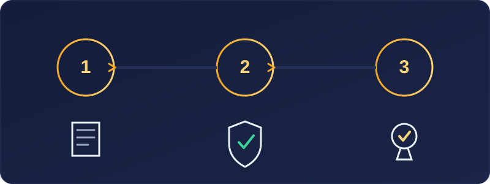
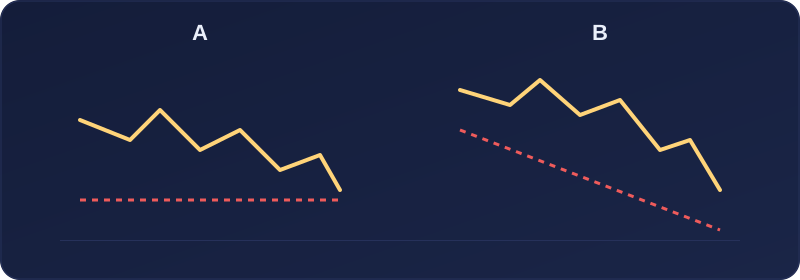
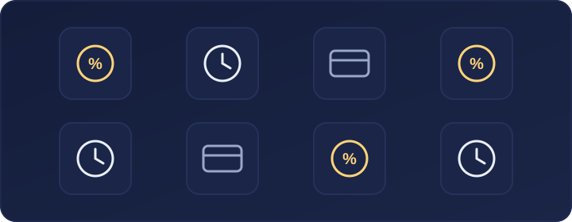

Las empresas de fondeo se han convertido en una alternativa muy conocida entre personas que quieren practicar trading sin utilizar, al menos en teoría, una gran cantidad de capital propio. Pero antes de pagar una evaluación o empezar un reto, conviene entender exactamente qué ofrecen, cómo funcionan y qué condiciones hay detrás.
La idea puede parecer sencilla: demostrar que sabes operar siguiendo unas normas y obtener acceso a una cuenta de mayor tamaño. Sin embargo, cada empresa tiene reglas diferentes, costes, límites de pérdida y condiciones que debes estudiar con calma.
¿Qué es una empresa de fondeo?
Una empresa de fondeo, también llamada prop firm, es una compañía que ofrece a traders la posibilidad de operar una cuenta bajo determinadas reglas. Normalmente, la persona interesada debe superar una fase de evaluación o reto. Si cumple los objetivos y respeta las normas de riesgo, puede acceder a una cuenta financiada o a un programa con reparto de beneficios.
En términos simples, el proceso suele ser:
- El trader elige un programa o tamaño de cuenta.
- Paga una cuota de inscripción o evaluación.
- Debe cumplir un objetivo de rentabilidad.
- Debe respetar unos límites máximos de pérdida.
- Si supera la evaluación, puede acceder a la siguiente fase o a una cuenta financiada.
- Si genera beneficios siguiendo las reglas, puede recibir una parte de ellos.
Es importante comprender que «cuenta financiada» no siempre significa que se esté operando directamente con dinero real en los mercados. En algunos modelos, la cuenta puede ser simulada y los pagos al trader depender de los resultados registrados bajo las normas del programa. Por eso es fundamental leer las condiciones específicas de cada empresa.
¿Por qué atraen a tantos traders?
Las empresas de fondeo suelen atraer a personas que quieren operar tamaños de cuenta superiores a su capital personal. También pueden ser interesantes para quienes desean trabajar con reglas claras de riesgo o medir su disciplina a través de una evaluación. Entre los motivos más habituales están:
- Acceso a cuentas de mayor tamaño teórico.
- Límites de pérdida definidos desde el principio.
- Posibilidad de recibir una parte de los beneficios.
- Uso de cuentas demo o simuladas para practicar.
- Una estructura que obliga a respetar normas de gestión del riesgo.
Pero es importante mantener una visión realista: superar una evaluación no es fácil y pagar una cuota no garantiza conseguir una cuenta financiada ni recibir pagos.

¿Cómo funciona una evaluación de fondeo?
Aunque cada empresa establece sus propias normas, una evaluación suele incluir varios elementos.
Objetivo de beneficio
Es la rentabilidad que debes alcanzar para superar una fase. Por ejemplo, la empresa puede pedir que consigas un determinado porcentaje de beneficio sin incumplir ningún límite de riesgo. El objetivo no debe analizarse de forma aislada. Un porcentaje puede parecer asequible, pero puede volverse difícil si el límite de pérdida diaria es muy estricto o si existe un plazo corto para completarlo.
Pérdida máxima total
La pérdida máxima total, también llamada maximum drawdown, es el límite de pérdidas permitido para la cuenta. Si la cuenta cae por debajo de ese límite, se considera que la evaluación ha sido suspendida o que se han incumplido las reglas. Algunas empresas calculan ese límite sobre el saldo inicial; otras utilizan un sistema dinámico que cambia conforme la cuenta gana dinero. Este detalle es muy importante. Dos retos con el mismo objetivo de beneficio pueden ser muy diferentes si uno tiene un drawdown fijo y otro tiene un drawdown dinámico.
Pérdida máxima diaria
La pérdida máxima diaria limita cuánto puedes perder durante una jornada. Si alcanzas ese límite, la cuenta puede quedar descalificada aunque el resultado general del mes siga siendo positivo. No solo se debe tener en cuenta una operación cerrada. Dependiendo de las condiciones, también pueden contar las pérdidas flotantes de operaciones que todavía están abiertas.
Días mínimos de operativa
Algunas empresas exigen operar un número mínimo de días antes de aprobar la evaluación. La intención suele ser evitar que una persona alcance el objetivo con una única operación de alto riesgo. Esta regla favorece una operativa más distribuida, aunque no garantiza que la estrategia sea sostenible.
Reglas sobre noticias y horarios
Hay empresas que limitan operar durante noticias económicas relevantes, mantener posiciones durante el fin de semana o utilizar determinadas estrategias. Por ejemplo, pueden existir restricciones sobre:
- Publicaciones de datos económicos importantes.
- Operaciones de muy corta duración.
- Uso de robots o sistemas automáticos.
- Mantener posiciones abiertas durante la noche.
- Copiar operaciones entre varias cuentas.
- Operativa de arbitraje o técnicas consideradas abusivas.
Nunca des por hecho que una estrategia permitida en un bróker tradicional también será aceptada por una empresa de fondeo.
¿Qué es el reparto de beneficios?
Cuando un trader supera las fases requeridas y cumple las condiciones de una cuenta financiada, la empresa puede ofrecer un reparto de beneficios. Por ejemplo, si el acuerdo establece un reparto del 80/20, el trader recibiría el 80 % de los beneficios que cumplan las normas del programa y la empresa conservaría el 20 % restante. Este porcentaje no es el único aspecto importante. También debes revisar:
- Cuándo se puede solicitar un pago.
- Cuántos días de operativa se requieren.
- Si existe un importe mínimo para retirar beneficios.
- Si hay límites máximos de retirada.
- Qué métodos de pago están disponibles.
- Qué documentación fiscal puedes necesitar en tu país.
- Qué ocurre si se incumple una regla antes de pedir un pago.

Cuenta simulada frente a cuenta real
Uno de los aspectos que más confusión genera es el tipo de cuenta que ofrece cada empresa. Algunas empresas utilizan cuentas simuladas durante la evaluación y también después de aprobarla. Otras pueden utilizar modelos híbridos o replicar determinadas operaciones en mercados reales según sus propios criterios. Para el trader, lo relevante es no asumir nada. Hay que revisar:
- Si la cuenta es simulada, real o híbrida.
- Quién ejecuta realmente las órdenes.
- Cómo se calculan los resultados.
- Bajo qué condiciones se autorizan los pagos.
- Qué derechos y obligaciones acepta el trader al participar.
Las palabras «fondeada» o «financiada» pueden sonar muy claras, pero su significado práctico depende del contrato y de las normas de cada proveedor.
El riesgo de intentar aprobar demasiado rápido
Uno de los errores más frecuentes es intentar superar la evaluación en pocos días utilizando un tamaño de posición excesivo. Esta mentalidad suele provocar:
- Operar con demasiados lotes.
- Mover o eliminar el stop loss.
- Recuperar pérdidas de forma impulsiva.
- Abrir varias operaciones correlacionadas.
- Incumplir el límite de pérdida diaria.
- Convertir una evaluación en una apuesta.
El objetivo no debería ser «aprobar cuanto antes», sino demostrar que se puede operar con un riesgo controlado y de forma repetible. Una empresa de fondeo puede poner reglas de riesgo, pero la disciplina sigue siendo responsabilidad del trader.
Costes que debes tener en cuenta
Participar en un programa de fondeo no suele ser gratuito. Antes de contratarlo, revisa todos los costes posibles:
- Cuota de evaluación.
- Cuota mensual, si existe.
- Coste de reinicio de la prueba.
- Comisiones por operación.
- Spread aplicado.
- Comisiones de retirada o pago.
- Costes de conversión de divisa.
- Impuestos que puedan aplicarse en tu país.
Un reto barato puede salir caro si sus normas son difíciles de cumplir o si obliga a pagar de nuevo cada vez que se incumple una condición.

Señales para investigar una empresa con prudencia
No existe una empresa perfecta para todo el mundo, pero sí hay aspectos que merece la pena comprobar antes de pagar. Investiga con especial cuidado si observas:
- Promesas de beneficios fáciles o garantizados.
- Información poco clara sobre reglas y pagos.
- Condiciones que cambian sin explicación.
- Falta de datos sobre la empresa o sus responsables.
- Reseñas demasiado parecidas o poco creíbles.
- Dificultades recurrentes de usuarios para cobrar.
- Normas ambiguas sobre estrategias «prohibidas».
- Atención al cliente inexistente o poco transparente.
Busca siempre las condiciones oficiales, léelas completas y guarda una copia antes de contratar. Las opiniones de otros usuarios pueden ser útiles, pero no sustituyen la lectura de las normas reales.
¿Para quién puede tener sentido una empresa de fondeo?
Una empresa de fondeo puede tener sentido para una persona que:
- Ya comprende los conceptos básicos del trading.
- Sabe utilizar una plataforma y calcular el tamaño de posición.
- Tiene un plan de gestión del riesgo.
- Ha practicado previamente en cuenta demo.
- Entiende que puede perder la cuota de evaluación.
- Está dispuesta a seguir reglas estrictas.
No suele ser una buena primera opción para quien todavía no sabe qué es un lote, cómo funciona el apalancamiento o cómo colocar un stop loss. Antes de afrontar un reto, conviene dominar la base.
Una forma responsable de prepararse
Antes de contratar una evaluación, puedes seguir este orden:
- Aprende los conceptos básicos: lotes, pips, spread, margen y drawdown.
- Practica tu estrategia en una cuenta demo.
- Lleva un diario de operaciones durante varias semanas o meses.
- Analiza cuánto arriesgas por operación.
- Comprueba si tu forma de operar encaja con las reglas del reto.
- Lee todas las condiciones, incluidas las excepciones.
- Considera la cuota como un coste que puedes perder.
- Evita utilizar dinero destinado a gastos importantes.
Conclusión
Las empresas de fondeo no son una fórmula rápida para ganar dinero ni sustituyen la formación. Son programas con reglas concretas que pueden servir como entorno de práctica y evaluación para algunos traders, pero también implican costes, presión y riesgo de perder la cuota de acceso.
La clave no está en encontrar el reto más grande ni en aprobarlo más rápido. Está en comprender las condiciones, gestionar el riesgo y desarrollar una forma de operar que sea prudente y consistente. Antes de buscar una cuenta financiada, invierte tiempo en algo todavía más valioso: aprender.
Este artículo tiene fines únicamente educativos y divulgativos. No constituye asesoramiento financiero, recomendación de inversión ni recomendación de ninguna empresa de fondeo concreta. El trading implica riesgo y las condiciones de cada empresa pueden cambiar. Lee siempre sus normas, costes y documentación antes de contratar un servicio.